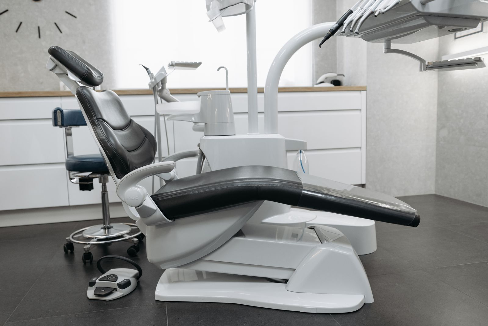

Профессиональная гигиена
Профилактика кариеса и пародонтита с косметическим эффектом.
цена уточняетсяАдрес, врачи и их график — на одном экране. Выберите направление и врача: сайт сам покажет дни приёма, администратору останется подтвердить время.

Фото — иллюстрация (Pexels), не интерьер клиники
На старом сайте два разных адреса, а записаться можно только оставив телефон и ожидая звонка.
Врач и день выбираются сразу по графику — без звонка с вопросом «а когда он принимает?».
Чётные и нечётные числа, субботы по неделям месяца считаются сами; заявка с врачом и временем уходит администратору в Telegram.
✦Это концепт. С вашими фото и правками будет ещё лучше
На текущем сайте в шапке указана Ноградская, 5 (2 этаж), а в контактах — ул. Николая Островского, 28, 1 этаж. В концепте адрес один и везде одинаковый; какой из них актуален — уточняется.
Описания — с сайта клиники. Цены вынесены там на отдельную страницу и здесь уточняются.
Профилактика кариеса и пародонтита с косметическим эффектом.
цена уточняетсяПрепараты для устранения гиперчувствительности эмали и дентина, физиолечение.
цена уточняется«Что имеем — сохраним»: укрепление корня штифтами и восстановление зуба.
цена уточняетсяВременный протез взамен одного зуба за одно посещение, стекловолоконные нити.
цена уточняетсяСъёмные и несъёмные протезы, выбор материалов.
цена уточняетсяДиагностика, профилактика и лечение — без «народных методов».
цена уточняетсяПодробности и показания — уточняются.
цена уточняетсяСнимаются безвредно для зуба.
цена уточняетсяИмена, должности и график — из разделов «Специалисты» и «Информация для пациентов». В записи ниже дни считаются по этому графику автоматически.
Эндодонтия (лечение каналов) и эстетические реставрации. Окончила КГМА в 2004 г.
Чётные числа 9:00–19:00
Нечётные 9:00–15:00
Сб (2-я, 4-я неделя) 9:00–17:00
Ежедневно 9:00–16:00
Сб (1-я, 3-я неделя) 10:00–17:00
Окончил Кемеровский государственный медицинский институт в 1994 г. Специализации: терапевтическая и ортопедическая стоматология.
График уточняется
Указан в графике работы врачей.
Нечётные числа 15:00–19:00
Как считаются «недели месяца», распределение услуг между врачами и праздничный график — уточняются.
Обязательная информация с текущего сайта — коротко и без опечаток.
Недоступные дни выключены автоматически. Время предварительное — администратор подтвердит звонком.